N-D Test Functions S¶
N-D Test Functions S¶Salomon test objective function.
This class defines the Salomon global optimization problem. This is a multimodal minimization problem defined as follows:
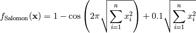
Here,  represents the number of dimensions and
represents the number of dimensions and ![x_i \in [-100, 100]](_images/math/33bdb423b6ec61d9668e76b556c95c96b2bb72ef.png) for
for  .
.
Two-dimensional Salomon function
Global optimum:  for
for  for
for
Sargan test objective function.
This class defines the Sargan global optimization problem. This is a multimodal minimization problem defined as follows:
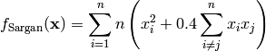
Here, represents the number of dimensions and for .
Two-dimensional Sargan function
Global optimum: for for
Schaffer 1 test objective function.
This class defines the Schaffer 1 global optimization problem. This is a multimodal minimization problem defined as follows:
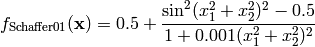
Here, represents the number of dimensions and for  .
.

Two-dimensional Schaffer 1 function
Global optimum: for for
Schaffer 2 test objective function.
This class defines the Schaffer 2 global optimization problem. This is a multimodal minimization problem defined as follows:

Here, represents the number of dimensions and for .
Two-dimensional Schaffer 2 function
Global optimum: for for
Schaffer 3 test objective function.
This class defines the Schaffer 3 global optimization problem. This is a multimodal minimization problem defined as follows:
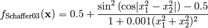
Here, represents the number of dimensions and for .
Two-dimensional Schaffer 3 function
Global optimum: 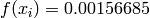 for 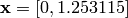
Schaffer 4 test objective function.
This class defines the Schaffer 4 global optimization problem. This is a multimodal minimization problem defined as follows:
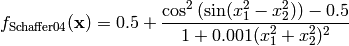
Here, represents the number of dimensions and for .
Two-dimensional Schaffer 4 function
Global optimum: 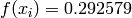 for
Schmidt-Vetters test objective function.
This class defines the Schmidt-Vetters global optimization problem. This is a multimodal minimization problem defined as follows:
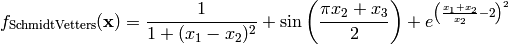
Here, represents the number of dimensions and ![x_i \in [0, 10]](_images/math/04492218e68759ff19d07231a62fe3a092015dfc.png) for
for  .
.
Global optimum:  for 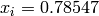 for
for 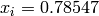 for
Schwefel 1 test objective function.
This class defines the Schwefel 1 global optimization problem. This is a unimodal minimization problem defined as follows:
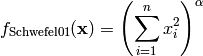
Where, in this exercise, 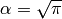.
Here, represents the number of dimensions and for .

Two-dimensional Schwefel 1 function
Global optimum: for for
Schwefel 2 test objective function.
This class defines the Schwefel 2 global optimization problem. This is a unimodal minimization problem defined as follows:
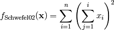
Here, represents the number of dimensions and for .
Two-dimensional Schwefel 2 function
Global optimum: for for
Schwefel 4 test objective function.
This class defines the Schwefel 4 global optimization problem. This is a multimodal minimization problem defined as follows:
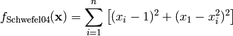
Here, represents the number of dimensions and for .
Two-dimensional Schwefel 4 function
Global optimum: for  for
for
Schwefel 6 test objective function.
This class defines the Schwefel 6 global optimization problem. This is a unimodal minimization problem defined as follows:
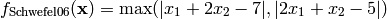
Here, represents the number of dimensions and for .
Two-dimensional Schwefel 6 function
Global optimum: for 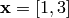
Schwefel 20 test objective function.
This class defines the Schwefel 20 global optimization problem. This is a unimodal minimization problem defined as follows:
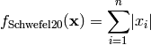
Here, represents the number of dimensions and for .
Two-dimensional Schwefel 20 function
Global optimum: for for
Schwefel 21 test objective function.
This class defines the Schwefel 21 global optimization problem. This is a unimodal minimization problem defined as follows:
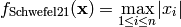
Here, represents the number of dimensions and for .
Two-dimensional Schwefel 21 function
Global optimum: for for
Schwefel 22 test objective function.
This class defines the Schwefel 22 global optimization problem. This is a multimodal minimization problem defined as follows:
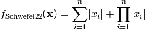
Here, represents the number of dimensions and for .
Two-dimensional Schwefel 22 function
Global optimum: for for
Schwefel 26 test objective function.
This class defines the Schwefel 26 global optimization problem. This is a multimodal minimization problem defined as follows:

Here, represents the number of dimensions and ![x_i \in [-500, 500]](_images/math/286a33626f115cb9d7e75a098b287cf93b7916e5.png) for .
for .
Two-dimensional Schwefel 26 function
Global optimum: for 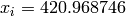 for
Schwefel 36 test objective function.
This class defines the Schwefel 36 global optimization problem. This is a multimodal minimization problem defined as follows:
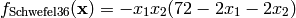
Here, represents the number of dimensions and 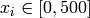 for .
Two-dimensional Schwefel 36 function
Global optimum: 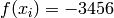 for 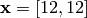
Shekel 5 test objective function.
This class defines the Shekel 5 global optimization problem. This is a multimodal minimization problem defined as follows:
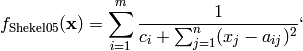
Where, in this exercise:
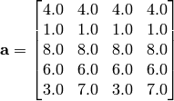
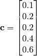
Here, represents the number of dimensions and for  .
.
Global optimum: 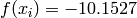 for 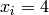 for
Shekel 7 test objective function.
This class defines the Shekel 7 global optimization problem. This is a multimodal minimization problem defined as follows:
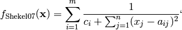
Where, in this exercise:
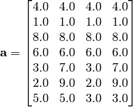
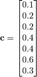
Here, represents the number of dimensions and for .
Global optimum: 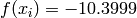 for for
Shekel 10 test objective function.
This class defines the Shekel 10 global optimization problem. This is a multimodal minimization problem defined as follows:
Where, in this exercise:
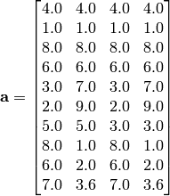
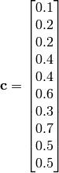
Here, represents the number of dimensions and for .
Global optimum: 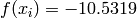 for for
Shubert 1 test objective function.
This class defines the Shubert 1 global optimization problem. This is a multimodal minimization problem defined as follows:
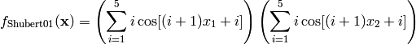
Here, represents the number of dimensions and ![x_i \in [-10, 10]](_images/math/d511ca3206c16bae3e3af3c02835f3fe9fb07286.png) for .
for .
Two-dimensional Shubert 1 function
Global optimum: for (and many others).
Shubert 3 test objective function.
This class defines the Shubert 3 global optimization problem. This is a multimodal minimization problem defined as follows:
Here, represents the number of dimensions and for .
Two-dimensional Shubert 3 function
Global optimum: for (and many others).
Shubert 4 test objective function.
This class defines the Shubert 4 global optimization problem. This is a multimodal minimization problem defined as follows:
Here, represents the number of dimensions and for .
Two-dimensional Shubert 4 function
Global optimum: for (and many others).
SineEnvelope test objective function.
This class defines the SineEnvelope global optimization problem. This is a multimodal minimization problem defined as follows:
Here, represents the number of dimensions and for .
Two-dimensional SineEnvelope function
Global optimum: for for
Six Hump Camel test objective function.
This class defines the Six Hump Camel global optimization problem. This is a multimodal minimization problem defined as follows:
Here, represents the number of dimensions and ![x_i \in [-5, 5]](_images/math/b7a53fa3c9c2f313c2a86c222fdfbbeaf4b5a3ed.png) for .
for .
Two-dimensional Six Hump Camel function
Global optimum: for or
Sodp test objective function.
This class defines the Sum Of Different Powers global optimization problem. This is a multimodal minimization problem defined as follows:
Here, represents the number of dimensions and ![x_i \in [-1, 1]](_images/math/69d20098894c45659a72bd07f85a904ff6726b1e.png) for .
for .
Two-dimensional Sum Of Different Powers function
Global optimum: for for
Sphere test objective function.
This class defines the Sphere global optimization problem. This is a multimodal minimization problem defined as follows:
Here, represents the number of dimensions and for .
Two-dimensional Sphere function
Global optimum: for for
Step test objective function.
This class defines the Step global optimization problem. This is a multimodal minimization problem defined as follows:
Here, represents the number of dimensions and for .
Two-dimensional Step function
Global optimum: for for
Stochastic test objective function.
This class defines a Stochastic global optimization problem. This is a multimodal minimization problem defined as follows:
The variable  is a random variable uniformly distributed in
is a random variable uniformly distributed in ![[0, 1]](_images/math/ab178d831a786b92cb4c9ddc2d33578223036f98.png) .
.
Here, represents the number of dimensions and for .
Two-dimensional Stochastic function
Global optimum: for for
StretchedV test objective function.
This class defines the Stretched V global optimization problem. This is a multimodal minimization problem defined as follows:
Where, in this exercise:
Here, represents the number of dimensions and for .
Two-dimensional StretchedV function
Global optimum: for when  .
.
StyblinskiTang test objective function.
This class defines the Styblinski-Tang global optimization problem. This is a multimodal minimization problem defined as follows:
Here, represents the number of dimensions and for .
Two-dimensional Styblinski-Tang function
Global optimum: for for